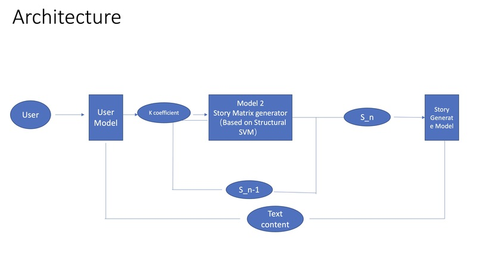
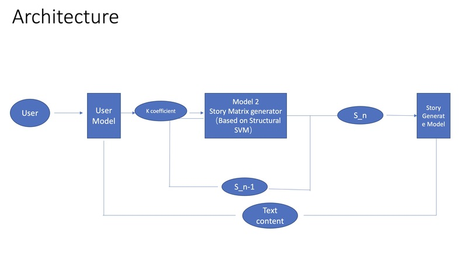

CEEG 项目详情
 

灵感
CEEG（Continuity-Enhanced Emotional Guidance）项目的灵感来源于对动态故事系统的需求，该系统可以根据实时情感反馈进行调整。传统的故事叙述遵循固定的叙述方式，限制了用户的互动。我们的目标是创建一个由AI驱动的系统，根据用户的情感修改故事情节，提供真正互动和个性化的体验。借鉴心理参与模型，我们设计了CEEG，以通过将叙述进展与实时情感状态对齐来增强沉浸感。
功能
CEEG集成了面部情感识别、满意度建模、结构化故事预测和文本生成，创建了一个响应式故事系统。它捕捉实时用户情感，将其处理为满意度分数（k_satisfaction），然后根据历史模式预测下一个逻辑故事事件。使用最近邻搜索算法，系统检索最具上下文相关性的文本片段，动态塑造叙述以保持参与和用户兴趣。
构建过程
我们使用模块化架构开发了CEEG，确保其组件之间的无缝交互。面部情感识别模型在深度学习框架上训练，以分类六种核心情感。满意度模型将情感分数转换为结构化反馈信号。基于CRF的结构化预测模型预测故事的下一个状态（S_matrix）。最后，最近邻搜索选择最相关的文本片段，允许连贯且上下文适当的故事进展。系统经过优化以实现实时处理和GPU加速，以提高效率。
遇到的挑战
一个主要挑战是将情感映射到满意度，以保持叙述的一致性。简单的线性模型未能捕捉情感波动与参与之间的复杂关系，因此我们实施了加权变换函数以平衡满意度变化。另一个问题是结构化故事建模中的高维输入，导致计算效率低下。我们优化了特征选择和增量训练以缓解这些问题。最后，确保生成文本的语义一致性需要微调检索算法，以优先考虑逻辑流和上下文相关性。